Prototype
In Argentina, access to safe water faces a challenge that does not stem from industrial activity, but from the earth itself. That is why we propose this "problem-solving" solution with the aim of improving the lives of many communities.
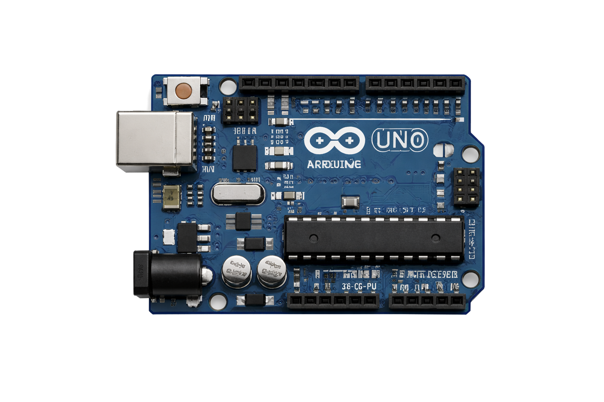
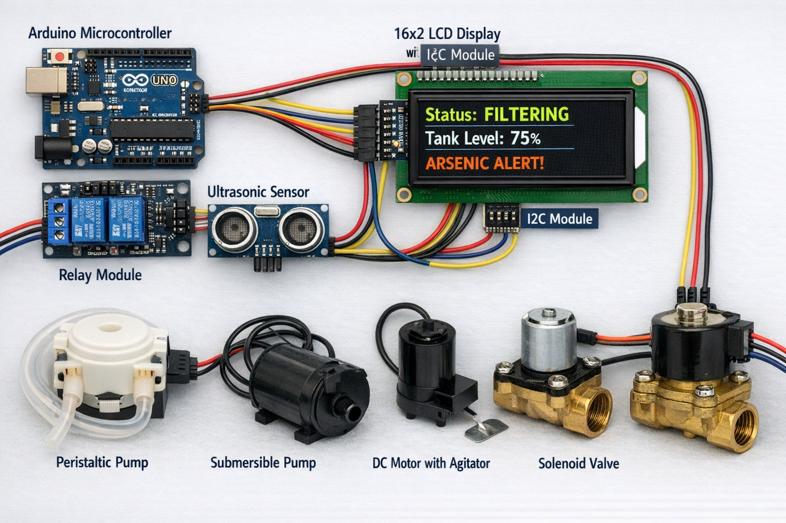
The Arduino Control System
Hardware Components
Microcontroller: Arduino (Uno or Nano) managing the logic.
Relay Module: Acts as a bridge between the low-voltage Arduino and the high-voltage pumps and motors.
Actuators: Peristaltic or Submersible Pumps: For water transfer.
- DC Motor / Stepper Motor: To drive the agitator paddle.
- Solenoid Valve: To control gravity-fed flow.
Sensors: Ultrasonic Sensor (HC-SR04): To monitor tank levels and prevent overflows.
User Interface: LCD Display (16x2 with I2C): Displays real-time water status, tank levels, and system alerts.
- I2C Module: To reduce the number of wires connected to the Arduino (only 4 pins).
- Real-time monitoring: Shows if the water is "Filtering", "Full", or if there is an "Arsenic Alert".

MATERIALS
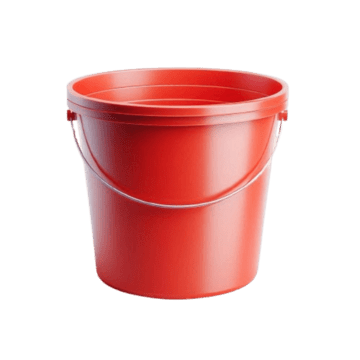
2 Reactors (bottles)
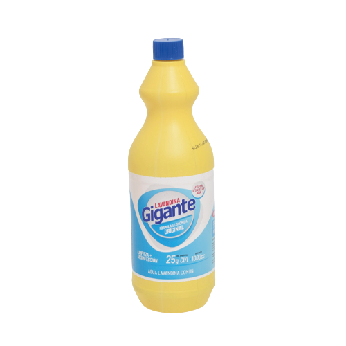
Bleach
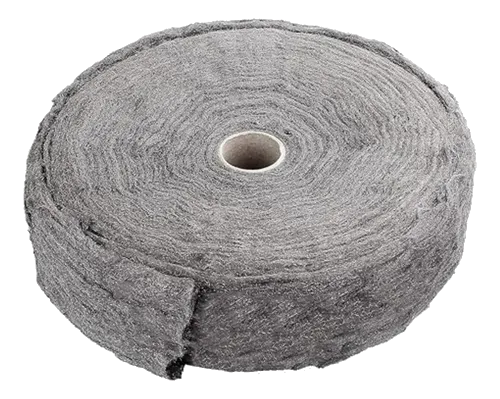
Iron
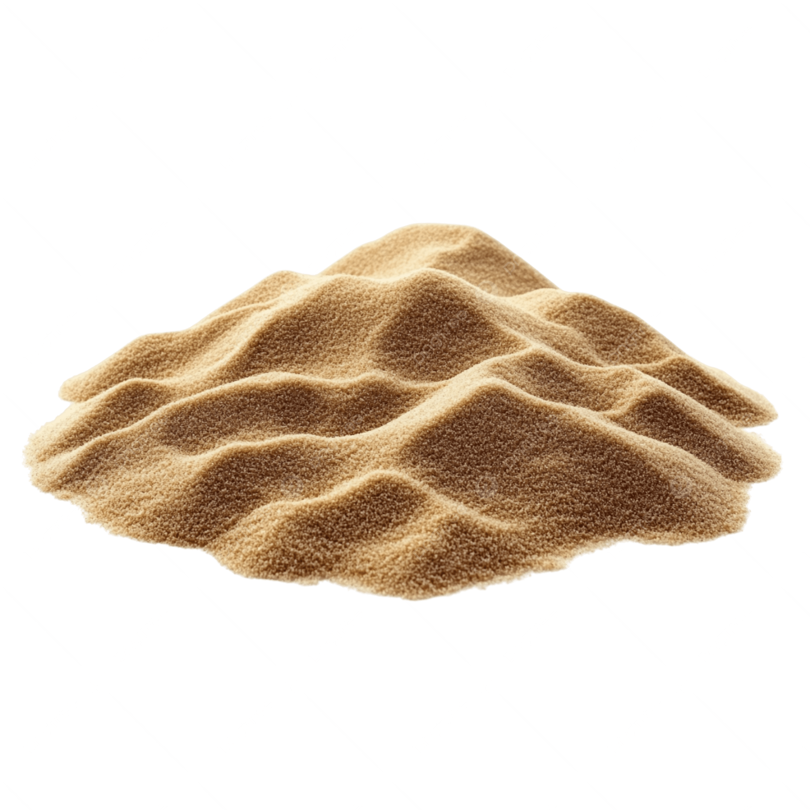
Fine quartz sand
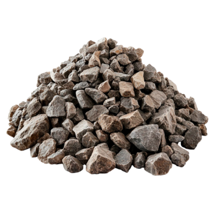
Fine gravel
Cotton or fine cloth
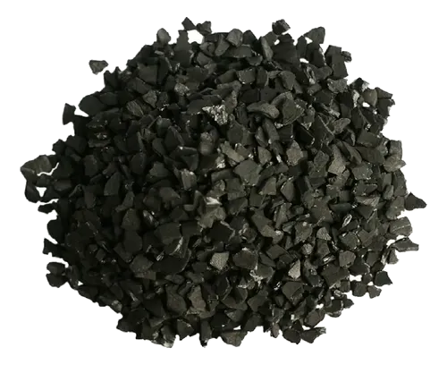
Activated carbon
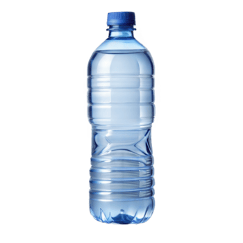
PET Bottle
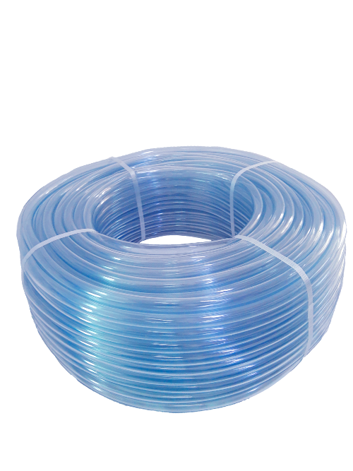
Plastic tubing
PROTOTYPE SKETCH
This image illustrates the process and development of the prototype’s core concept, featuring a system designed to combine various water filtration and purification methods to ensure safety for human consumption.
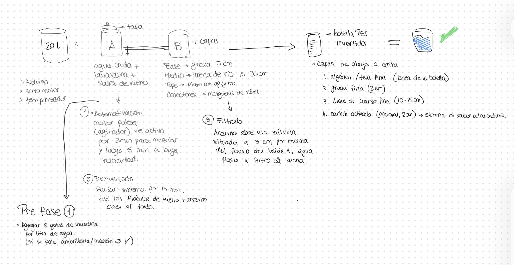
EXPECTED OUTCOME
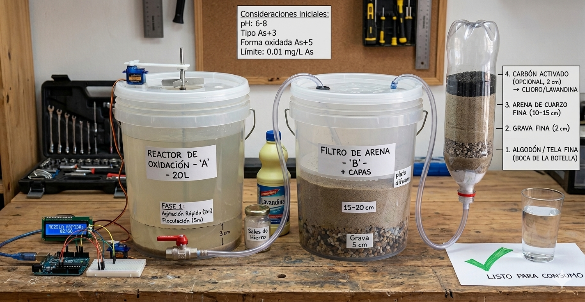